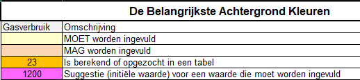
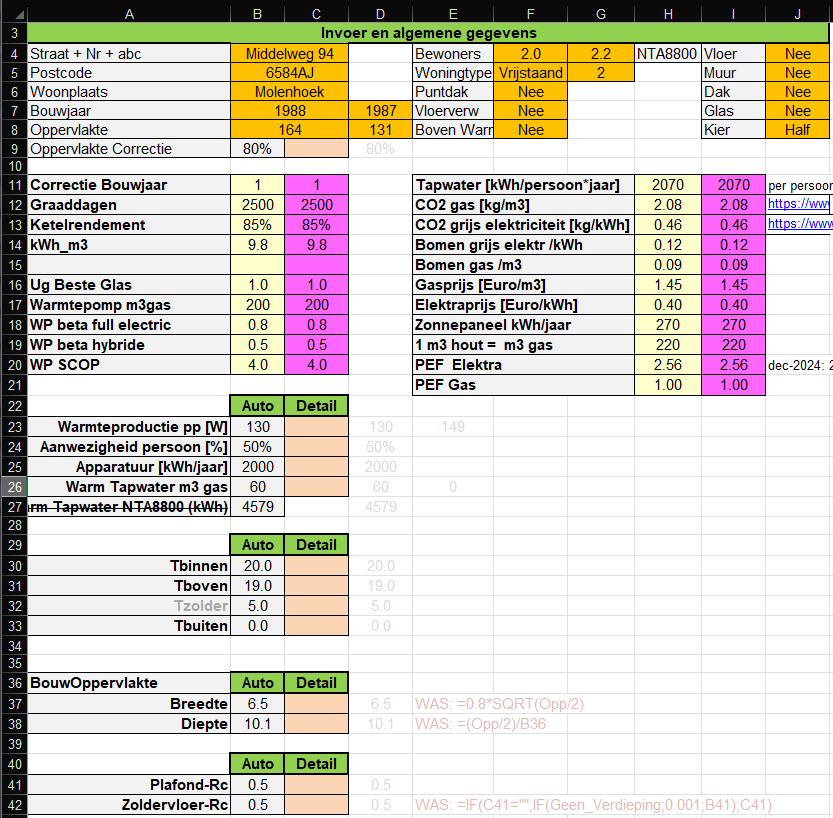

Belangrijk is om op te merken dat de meeste velden beveiligd zijn en je kunt ze dus niet per ongeluk veranderen.
De enige waarde die hier soms aangepast moet worden is de Oppervlakte Correctie C9.
Een verder uitleg van de heier gebruikte parameters is te vinden in de sectie voor ontwerpers.
Dit is het begin van het tabblad details, waarin allerlei algemene parameters zijn gedefinieerd.
Als je naar de kleurencodering kijkt,

Zie je dat je hier weinig hoeft in te vullen. Alle noodzakelijke velden zijn al gevuld met een initiële waarde.
De ervaring leert dat het enige veld dat je hier soms moet veranderen is de oppervlakte correctie C9. Als startwaarde voor het gebruiksoppervlakte van de woning wordt namelijk de waarde uit het BAG register gebruikt. Als de woning echter een aangebouwde garage o.i.d. heeft, die via een deur met het woongedeelte is verbonden, telt de garage mee als gebruiksoppervlakte. Om het verwarmd oppervlakte te verkrijgen moeten we dus een correctie factor invoeren. Het default waarde B9, is afhankelijk van het woningtype (gedefinieerd in WT_Table).
In onderstaand voorbeeld betreft het een vrijstaande woning, waarvan het bewoonbaar (mogelijk verwarmd) oppervlakte wordt ingeschat op 80%. Is er geen aangelegen garage o.i.d., zet dan C9 op 100%.
